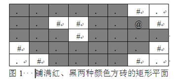

采用搜索算法解决问题时，需要构造一个表明状态特征和不同状态之间关系的数据结构，这种数据结构称为结点。不同的问题需要用不同的数据结构描述。
根据搜索问题所给定的条件，从一个结点出发，可以生成一个或多个新的结点，这个过程通常称为扩展。结点之间的关系一般可以表示成一棵树，它被称为解答树。搜索算法的搜索过程实际上就是根据初始条件和扩展规则构造一棵解答树并寻找符合目标状态的结点的过程。
深度优先搜索DFS（Depth First Search）是从初始结点开始扩展，扩展顺序总是先扩展最新产生的结点。这就使得搜索沿着状态空间某条单一的路径进行下去，直到最后的结点不能产生新结点或者找到目标结点为止。当搜索到不能产生新的结点的时候，就沿着结点产生顺序的反方向寻找可以产生新结点的结点，并扩展它，形成另一条搜索路径。
为了便于进行搜索，要设置一个表存储所有的结点。由于在深度优先搜索算法中，要满足先生成的结点后扩展的原则，所以存储结点的表一般采用栈这种数据结构。
深度优先搜索算法的搜索步骤一般是：
（1）从初始结点开始，将待扩展结点依次放到栈中。
（2）如果栈空，即所有待扩展结点已全部扩展完毕，则问题无解，退出。
（3）取栈中最新加入的结点，即栈顶结点出栈，并用相应的扩展原则扩展出所有的子结点，并按顺序将这些结点放入栈中。若没有子结点产生，则转（2）。
（4）如果某个子结点为目标结点，则找到问题的解（这不一定是最优解），结束。如果要求得问题的最优解，或者所有解，则转（2），继续搜索新的目标结点。
深度优先搜索算法的框架一般为：
void DFS（）
{
栈S初始化；
初始结点入栈；
置搜索成功标志flag= false;
while （栈不为空 && ！flag）
{
栈顶元素出栈，赋给current；
while （current 还可以扩展）
{
由结点current扩展出新结点new；
if （new 重复于已有的结点状态） continue;
new结点入栈；
if (new结点是目标状态)
{
置flag= true; break;
}
}
}
if （flag） 输出结果；
else 输出无解信息；
}
由于深度优先搜索是一个递归的过程，因此通常也使用递归函数来实现。一般框架为：
void DFS（结点类型 current） // 从结点current出发递归地深度优先搜索
{
置visited[current]=true； // 表示结点current已被处理
if （current结点是目标状态）
{
置搜索成功标志flag= false;
return ;
}
while （current 还可以扩展）
{
由current结点扩展出新结点new；
if （! visited[new]） DFS（new）； // 对未处理的结点new递归调用DFS
}
置visited[current]=flase； // 表示结点current以后可能被处理
}
深度优先搜索中扩展结点的原则是先产生的后扩展。因此，深度优先搜索第一个找到的解，并不一定是问题的最优解，要搜索完整个状态空间，才能确定哪个解是最优解。
【例1】黑色方块
有一个宽为W、高为H的矩形平面，用黑色和红色两种颜色的方砖铺满。一个小朋友站在一块黑色方块上开始移动，规定移动方向有上、下、左、右四种，且只能在黑色方块上移动（即不能移到红色方块上）。编写一个程序，计算小朋友从起点出发可到达的所有黑色方砖的块数（包括起点）。
例如，如图1所示的矩形平面中，“#”表示红色砖块，“．”表示黑色砖块，“@”表示小朋友的起点，则小朋友能走到的黑色方砖有28块。

（1）编程思路。
采用非递归的深度优先搜索法解决这个问题。
用数组s模拟栈操作，栈顶指针为top，初始时，top=-1，表示栈空。
入栈操作为 s[++top]=t;
出栈操作为 t=s[top--] 。
程序中定义方砖的位置坐标（x,y）为Node类型，定义数组int visit[N][N]标记某方砖是否已走过，visit[i][j]=0表示坐标（i,j）处的方砖未走过，visit[i][j]=1表示坐标（i,j）处的方砖已走过。初始时visit数组的所有元素值均为0。
具体算法步骤为：
① 将出发点（startx，starty）入栈s，且置visit[startx][starty]=1，表示该处的方砖已被处理，以后不再重复搜索。
② 将栈s的栈顶元素出栈，得到一个当前方砖cur，黑色方砖计数（sum++），沿其上、下、左、右四个方向上搜索未走过的黑色方砖，将找到的黑色方砖的坐标入栈。
③ 重复执行②，直至栈s为空，则求出了所有能走过的黑色方砖数。
（2）源程序及运行结果。
#include <iostream>
using namespace std;
#define N 21
struct Node
{
int x;
int y;
};
int dx[4]={-1,1,0,0};
int dy[4]={0,0,-1,1};
char map[N][N];
int visit[N][N];
int dfs(int startx, int starty,int w,int h)
{
Node s[N*N],cur,next; // s为栈
int top,i,x,y,sum; // top为栈顶指针
top=-1; // 栈S初始化
sum=0;
cur.x=startx; cur.y=starty;
visit[startx][starty]=1;
s[++top]=cur; // 初始结点入栈；
while(top>=0) // 栈不为空
{
cur=s[top--]; // 栈顶元素出栈
sum++; // 方砖计数
for (i=0;i<4;i++)
{
x=cur.x+dx[i]; y=cur.y+dy[i];
if(x >=0 && x<h && y>=0 && y<w && map[x][y]!='#' && visit[x][y]==0)
{
visit[x][y] = 1;
next.x=x; next.y=y; // 由cur扩展出新结点next
s[++top]=next; // next结点入栈
}
}
}
return sum;
}
int main()
{
int i,j,pos_x,pos_y,w,h,sum;
while(1)
{
cin>>w>>h;
if (w==0 && h==0) break;
for(i=0;i<h;i++)
{
for(j=0;j<w;j++)
{
cin>>map[i][j];
if (map[i][j]=='@')
{
pos_x = i; pos_y = j;
}
visit[i][j] = 0;
}
}
sum=dfs(pos_x, pos_y,w,h);
cout<<sum<<endl;
}
return 0;
}
编译并执行以上程序，可得到如下所示的结果。
8 5
......#.
..##..@#
...#....
#......#
.#....#.
28
0 0
也可以采用递归的方法编写程序。
（3）深度优先搜索采用递归函数实现的源程序。
#include <iostream>
using namespace std;
#define N 21
char map[N][N];
int visit[N][N];
int w,h,sum;
void dfs(int x, int y)
{
if(x >=0 && x<h && y>=0 && y<w && map[x][y]!='#' && visit[x][y]==0)
{
visit[x][y] = 1;
sum++;
dfs(x+1,y); // 递归访问四个方向的砖块
dfs(x-1,y);
dfs(x,y+1);
dfs(x,y-1);
}
}
int main()
{
int i,j,pos_x,pos_y;
while(1)
{
cin>>w>>h;
if (w==0 && h==0) break;
for(i=0;i<h;i++)
{
for(j=0;j<w;j++)
{
cin>>map[i][j];
if (map[i][j]=='@')
{
pos_x = i; pos_y = j;
}
visit[i][j] = 0;
}
}
sum = 0;
dfs(pos_x, pos_y);
cout<<sum<<endl;
}
return 0;
}